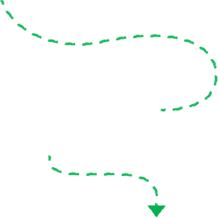
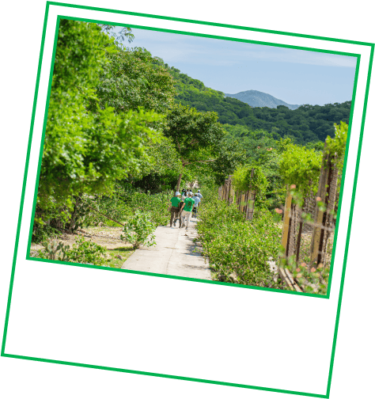
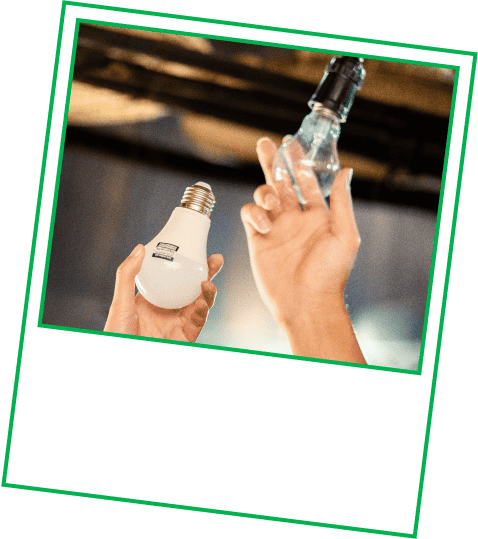
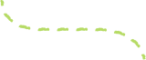
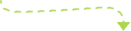

Swipe for some surprising facts (and how you’re helping).
Every ₫1,000 or ₫2,000 from your Grab ride or order goes towards
projects that help Mother Nature.
Here's what happens when you opt in to our Green Programme:
Turn your small change into big changes for the planet

That's why the
GrabForGood Forest programme
is helping to protect a precious ecosystem in Ninh Thuận.
With The Sống Foundation and local partners, we’re
planting trees across this UNESCO biosphere reserve,
from Nui Chua to Tan Giang Lake.
Did you know?
Vietnam has a forest that barely gets rain, but is full of life

Ninh Thuận
gets little rain, but
is home to forests, mountains,
coral reefs, and beaches!
With your support, we’re backing a project that
gives away 6 million LED bulbs
to homes across Vietnam…for free.
You'll also support another project
installing 21,000 energy-efficiency cookstoves
in Vietnam, helping families cook safely while improving indoor
air quality.
Did you know?
New stoves and LED lights are protecting forests (and families) in
Vietnam

This partnership with INTRACO helps over 1.5 million people
save money,
and
enjoy safer lighting
at home.
That’s not all.
You’ll be supporting a project that installs
21,000 energy-efficient Improved Cookstoves (ICS)
in Vietnam’s Tuyen Quang Province—helping families cook more
safely while reducing emissions and pressure on forests.
And over 600km away in Cambodia, your contribution also helps
protect the
Keo Seima Wildlife Sanctuary
(home to over 60 endangered species) from deforestation.
Can you guess how many trees have been contributed so far?
Goes to show how small change can grow into something big, huh? Tap
here to opt in to
Green Programme,
if you haven't yet.
Quick quiz.
Since 2021, Grab users like you have been championing forest
conservation across Southeast Asia.


